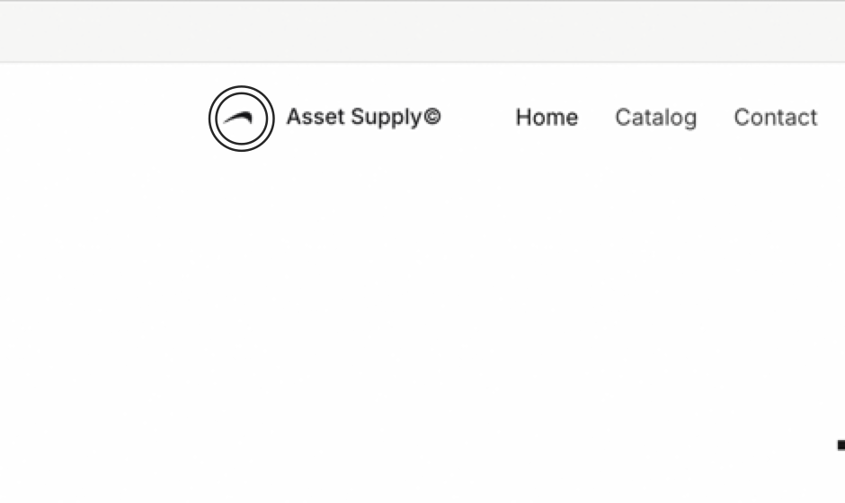

Hold one chord and walk an interface out loud. Pass writes the brief, with the pixels already attached.
Free while in beta · macOS 26 · Runs entirely on device
How it works
You already know what's wrong with the page. The cost is writing it down — screenshotting, cropping, describing which of four similar buttons you meant.
Feedback pass — 3 notes from asset-supply.com 1. The hero image is too dominant — bring it down so the headline leads. screenshot: ~/.ambient/shots/8AFCC5BE-1.png context: https://asset-supply.com/ · image · "hero-01" 2. Increase the opacity of this, it's disappearing on white. screenshot: ~/.ambient/shots/B802670C-1.png context: https://asset-supply.com/ · link · "Asset Supply©"
Copy it, or paste it in and send it yourself. Pass never sends on your behalf.
Why it's faster
Nothing clever is happening here. The gap between the two channels is the whole product — everything else exists so the faster one loses none of the precision of the slower one.
You speak about 150 words a minute. You type about 40.
One pass saves thirty-six minutes. You are ahead a quarter of the way into the first one you record.
Pointing
The cursor is sampled continuously and every transcribed word carries the instant it was spoken. Say “this” and Pass looks up where you were pointing at that word — not where the mouse drifted to by the end of the sentence.

“Move this above that” marks two different elements, resolved at two different instants.
What it changes
The forty minutes you save is the part you can count. The part you can't is that the work reaches your agent while you are still looking at the page.
Twenty-two minutes from noticing to fixed. The old version of this ends with a ticket, tomorrow.
npx @ambient/mcp Then ask your agent: “Read the latest pass and fix everything in it.”
Pass gives back about €360 of your month and costs €15.
Spec
Four minutes of talking — eleven notes, eleven screenshots, already written.
Download free